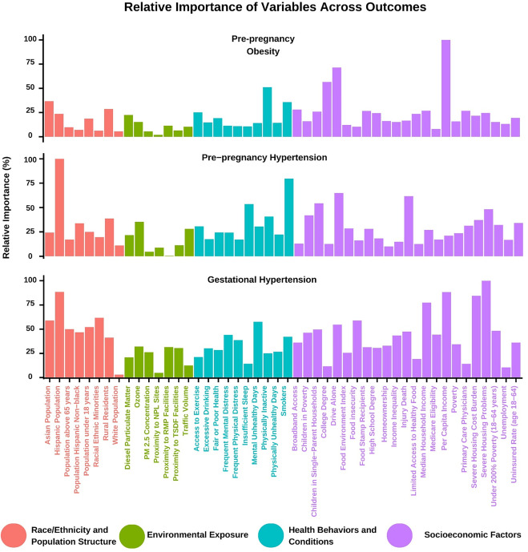

This article represents an emerging frontier in preventive cardiology by integrating socio-environmental exposures, machine learning, and maternal cardiometabolic health.
It expands prevention beyond traditional risk factors into the broader exposome framework and highlights how environmental and social determinants shape cardiovascular risk across the lifespan.

Digital Health and AI in Preventive Cardiology
AJPC welcomes original investigations, implementation studies, and perspectives focused on digital innovation in cardiovascular prevention.
Areas of interest include multimodal AI, imaging analytics, precision prevention, digital therapeutics, wearable technologies, implementation science, and population health.
Highlighted Articles
Artificial intelligence-enabled coronary plaque quantification for personalized risk assessment and lipid-lowering therapy: Insights from the FISH&CHIPS study
One of the clearest examples of AI-enabled plaque phenotyping translating directly into personalized prevention and lipid management.
Prediabetes, obesity and risk for incident atherosclerotic cardiovascular disease: A large-scale contemporary cohort study
Large-scale contemporary evidence showing that prediabetes and obesity are major contributors to premature ASCVD risk.
Polygenic risk scores enhance LDL cholesterol–based risk stratification for coronary artery disease
Integrates genomics with traditional lipid metrics to advance individualized primary prevention and precision risk prediction.
Journal Highlights
CiteScore
Global impact across preventive cardiology research.
Impact Factor
Strong scientific influence in cardiovascular prevention.
First Decision
Rapid editorial review and decision timeline.
Acceptance Rate
Selective publication of high-quality scientific work.
Explore AJPC
Submit your manuscript
Share research that advances prevention, cardiometabolic health, implementation science, and population cardiovascular health.
About the journal
Learn more about AJPC’s aims, scope, publishing model, indexing, and role as the official journal of ASPC.
Editorial board
Meet the editorial leadership and international board guiding the journal’s scientific direction.